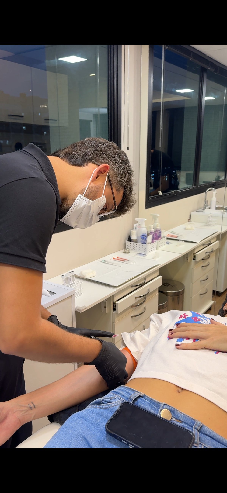

Blog da Clínica Gustavo Martins
Conteúdo especializado sobre harmonização facial, estética e saúde. Informação de quem realmente entende, direto do consultório para você.

Ultherapy®: O Lifting Não Cirúrgico com Ultrassom Microfocado
Como o ultrassom microfocado estimula colágeno nas camadas profundas da pele para um lifting real, sem cirurgia.
Ler artigoMétodo NaturalUp®: O Que É e Como Funciona
Entenda a técnica proprietária que transforma rostos com progressividade, naturalidade e durabilidade, sem aparência artificial.
Ler artigoLabial
Preenchimento Labial: Guia Completo para Resultados Naturais
Tudo sobre preenchimento labial: como é feito, duração, riscos, preço e como garantir um resultado elegante, sem exageros.
Ler artigoBotulínica
Toxina Botulínica: Tudo o Que Você Precisa Saber
Como funciona, duração, preço, segurança e como garantir um resultado natural sem congelar o rosto. Guia completo.
Ler artigo
i-PRF: O Que É, Como Funciona e Para Que Serve
Um dos protocolos favoritos do Dr. Gustavo Martins usa o próprio sangue para regenerar a pele e estimular colágeno de forma natural.
Ler artigoBiorregeneração Facial: O Que É, Como Funciona e Para Quem É Indicada
PDRN, Polynucleotides e a diferença entre regenerar e estimular. Por que a biorregeneração representa uma mudança real de paradigma na estética.
Ler artigoBioestímulo de Colágeno Não Inflamatório: Por Que a Forma de Estimular Importa
Sculptra, Radiesse e PLLA: como cada um funciona, o que os diferencia e por que a via do estímulo define a qualidade do resultado.
Ler artigo
Microagulhamento: A Técnica Que Respeita os Limites de Cada Pele
Profundidade e pressão adaptadas ao fototipo, combinação com iPRF e vitaminas. Por que individualizar o protocolo faz toda a diferença no resultado.
Ler artigoPreenchimentos Faciais Estruturadores: Como Reequilibrar o Rosto Sem Exagero
Malar, mandíbula, mento. Como o ácido hialurônico de alta viscosidade restaura proporções e define marcos anatômicos sem aparência artificial.
Ler artigo